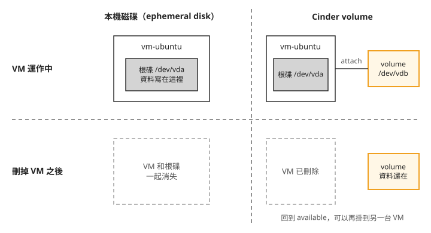
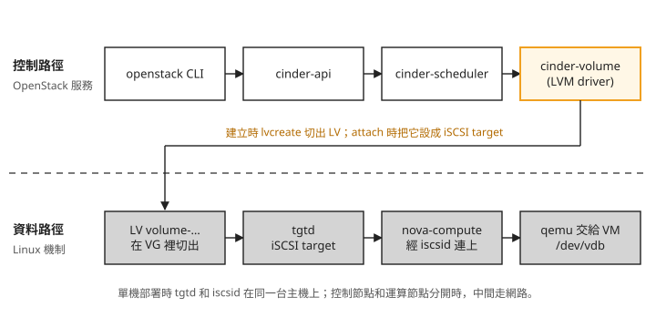
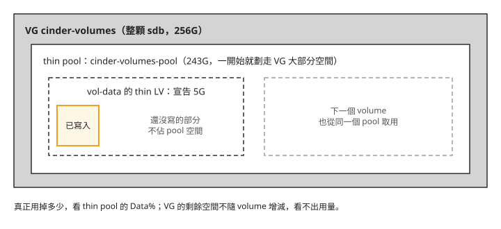
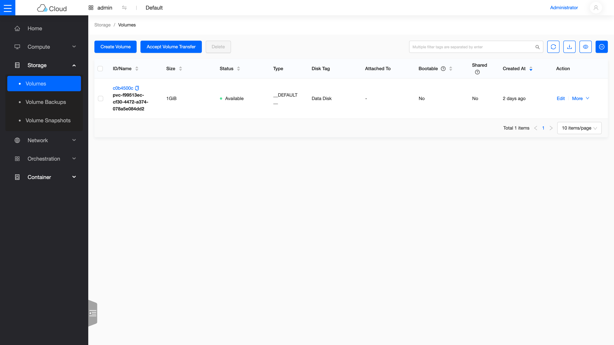

Day 3: 用 Cinder 加上區塊儲存——LVM 後端、掛載 volume 與從 volume 開機¶
Day 2 結束時,demo 租戶裡有兩台 VM:vm-cirros 和 vm-ubuntu。假設你在 vm-ubuntu 裡放了一些資料,後來想換一個大一點的 flavor,或是想重灌系統。最直接的做法是把 VM 刪掉重開,但這樣 VM 裡的資料會一起消失。要讓資料留得比 VM 久,需要一顆不屬於任何一台 VM 的磁碟,這就是 OpenStack 的區塊儲存服務 Cinder 提供的東西。
這一章先把 Day 0 留下的那顆空白 data disk 交給 Cinder 管理,再用 Day 1 學過的「改 globals.yml、重跑 deploy」把 Cinder 加進已經在運作的雲,最後實際建一顆磁碟、掛到 VM 上寫入資料,並從磁碟直接開一台 VM。讀完之後,volume 建不起來或掛不上時,你能分辨該先查 OpenStack 的服務狀態,還是主機上的 LVM 和 iSCSI。
VM 的兩種磁碟¶
Day 2 開 VM 時,server create 只給了 image 和 flavor,沒有提到磁碟。Nova 會依 flavor 的磁碟大小,在跑 VM 的那台主機上建一顆根碟,把 image 寫進去。這種磁碟叫 ephemeral disk(本機磁碟):它是 VM 的一部分,VM 在它就在,VM 刪掉它也跟著刪掉。
Cinder 提供的是另一種,叫 volume:一顆由 Cinder 管理、獨立存在的磁碟。你可以把它 attach(掛載)到一台 VM 上,VM 裡會多出一顆 /dev/vdb;不用時 detach(卸載),它回到可用狀態,資料留在上面,之後可以再掛給另一台 VM。公有雲上的 EBS、Managed Disks 也是這一類。
下面這張圖比較兩種磁碟在刪掉 VM 前後的差別:

這張圖說明兩件事:
- volume 不會取代根碟。 一般的 VM 照樣有本機根碟,volume 是額外掛上去的第二顆碟,適合放要留下來的資料。
- 刪 VM 只影響本機磁碟。 volume 的生命週期由 Cinder 管,跟哪台 VM 無關。步驟 4 還會看到另一種用法:連根碟都放在 volume 上。
Cinder 怎麼把一顆碟交給 VM¶
volume 背後總要有真正的儲存空間。Cinder 本身不實作儲存,而是透過 backend(後端)使用既有的儲存技術,每種 backend 由一個 driver 負責操作。這門課用的是最簡單的 LVM backend:直接用主機上的一顆硬碟。
這裡先認識 LVM(Logical Volume Manager)。它是 Linux 內建的磁碟管理機制,有三層:
- PV(physical volume):交給 LVM 管理的實體硬碟,這一章是
/dev/sdb。 - VG(volume group):一個或多個 PV 合成的空間池。Cinder 預設使用名為
cinder-volumes的 VG。 - LV(logical volume):從 VG 裡切出來的一塊空間,用起來就像一顆獨立的硬碟。Cinder 每建一個 volume,就在 VG 裡切一個 LV。
切出來的 LV 在主機上,VM 卻是 qemu 跑起來的程序,中間還要一段連線。LVM backend 用的是 iSCSI:一種讓一台機器透過網路使用另一台機器上磁碟的協定。提供磁碟的一方叫 target,使用磁碟的一方叫 initiator。
正式環境裡,存放 volume 的儲存主機和跑 VM 的運算主機通常是不同台,iSCSI 就是讓兩邊透過網路接起來。這一章所有東西都在同一台主機上,target 和 initiator 也在同一台,連線只在主機內部繞一圈;換成多台主機,協定和設定方式都一樣,只是中間真的經過網路。
Kolla 用兩個容器實作這兩方:tgtd 是 target,負責把 LV 分享出去;iscsid 是 initiator,nova-compute 透過它連上這顆磁碟,再交給 qemu,VM 裡就多出一顆 /dev/vdb。
把一次「建立 volume、掛到 VM」的經過畫出來,上下分成兩條路徑:

照著圖由上往下看:
- 上半是控制路徑,全是 OpenStack 的服務。
cinder-api接收請求;cinder-scheduler決定這顆 volume 要放在哪個 backend;cinder-volume是實際去操作儲存的那一個,它裡面跑的就是 LVM driver。 - 下半是資料路徑,全是 Linux 本來就有的機制。 LVM 負責切空間,iSCSI 負責把空間送到 VM 手上。cinder-volume 收到請求後去呼叫這些工具,所以租戶只要呼叫 API 就能拿到一顆碟,不需要登入主機。
- 兩條路徑的交會點是
cinder-volume。 這也決定了除錯的順序:volume 狀態卡在creating或變成error,先確認上半的服務都活著;服務都正常,才往下查主機上的 VG、LV 和 iSCSI。
步驟 1:把 data disk 做成 VG¶
Day 0 建 VM 時多掛了一顆 256G 的 data disk,在 VM 裡是 /dev/sdb,一直保持未格式化,就是留給這一步。Kolla 不會替你分割或格式化磁碟,VG 要自己先準備好,名稱用 Kolla 預設的 cinder-volumes。
pvcreate 會清掉磁碟原本的內容,所以前兩行先確認對象:lsblk 看容量對不對、有沒有分割或檔案系統;blkid 在磁碟上找不到任何格式標記時會回傳失敗,這時印出 safe 才動手:
lsblk -o NAME,SIZE,TYPE,MOUNTPOINT,FSTYPE /dev/sdb # 256G、無分割、無檔案系統
sudo blkid /dev/sdb || echo "safe" # 無 signature 才動手
sudo pvcreate /dev/sdb
sudo vgcreate cinder-volumes /dev/sdb # VG 名稱 = kolla 預設 cinder_volume_group
確認 sdb 是哪一顆碟,要看容量,不要看名字。Day 0 用的 E16s_v5 沒有本機暫存碟,所以 sdb 就是那顆 256G 的 data disk;如果你換成名稱帶 d 的機型(例如 Ed16s_v5),Azure 會多掛一顆暫存碟,sdb 可能是它,這時要依 lsblk 的容量找出真正的 data disk,把上面指令裡的 /dev/sdb 換掉。
步驟 2:對已經在運作的雲加上 Cinder¶
Day 1 說過,想改設定就改 globals.yml 再重跑 deploy。加一個新服務也是同樣的做法:打開它的開關,重跑 deploy。因為 deploy 是冪等的,已經在運作的 Keystone、Nova、Neutron 不會被重做,Kolla 只會新增 Cinder 的容器,並更新其他服務裡跟 Cinder 有關的設定(例如 Nova 掛 volume 需要的設定),重啟設定有變動的容器。
這一章要打開兩個開關:enable_cinder 部署 Cinder 本身,enable_cinder_backend_lvm 讓它使用步驟 1 的 VG。開關會連帶打開其他東西:LVM backend 會帶起 tgtd 和 iscsid 兩個容器,這正是資料路徑需要的;但 enable_cinder 還會連帶部署 cinder-backup,這是另一個服務,負責把 volume 備份到別的儲存系統。在 Kolla 2025.1,enable_cinder_backup 的預設值是 yes,備份目的地預設是 Ceph(一套分散式儲存系統,Day 14 才會部署),而這個環境沒有任何可用的備份目的地,它部署起來也只會處於 down 的狀態。
所以在打開 Cinder 之前,先把 cinder-backup 關掉:
如果你已經先部署過才發現它,處理方式見疑難排解:cinder-backup 一直是 down。
接著打開兩個開關,重跑 deploy:
printf 'enable_cinder: "yes"\nenable_cinder_backend_lvm: "yes"\n' >> /etc/kolla/globals.yml
source ~/kolla-venv/bin/activate
kolla-ansible deploy -i ~/all-in-one # 冪等重跑
跑完一樣看 PLAY RECAP 的 failed=0。再用管理員身分(source /etc/kolla/admin-openrc.sh)確認 Cinder 的服務:
清單裡要有兩個服務,狀態都是 up:cinder-scheduler,以及 Host 欄以 @lvm-1 結尾的 cinder-volume。lvm-1 是 Kolla 替這個 LVM backend 取的名字。這兩個就是控制路徑上的兩個服務;如果其中一個是 down,先不要往下做,去看它的 log:Kolla 把各服務的 log 寫在主機的 /var/log/kolla/<服務名稱>/ 底下,cinder-volume 的 log 就在 /var/log/kolla/cinder/cinder-volume.log,從最後幾十行找 ERROR。
步驟 3:volume 的建立、掛載與卸載¶
現在換回 demo 租戶的身分,走一次 volume 的完整生命週期:建一顆 5G 的 volume,掛到 vm-ubuntu,在 VM 裡格式化、寫一個檔案,再卸載。下面 ssh 那一行的 172.24.4.111 是 Day 2 分配給 vm-ubuntu 的 floating IP,請換成你自己的(openstack server list 的 Networks 欄可以查到)。
另外,這段指令在 VM 裡把 volume 掛到 /mnt 之後,沒有先卸載就直接 detach。剛寫入的資料可能還留在 VM 的記憶體裡、還沒寫到磁碟上,這樣 detach 不保證資料完整。所以在執行 server remove volume 那一行之前,先在 VM 裡把資料寫回磁碟並卸載檔案系統(IP 同樣換成你的):
完整的生命週期如下:
source ~/demo-openrc.sh
openstack volume create --size 5 vol-data # → available
openstack server add volume vm-ubuntu vol-data # VM 內出現 /dev/vdb
ssh -i ~/.ssh/oslab_ed25519 ubuntu@172.24.4.111 \
"sudo mkfs.ext4 /dev/vdb && sudo mount /dev/vdb /mnt && echo test | sudo tee /mnt/proof.txt"
openstack server remove volume vm-ubuntu vol-data # → available
sudo lvs cinder-volumes # host 端看 thin LV
每一行對應圖上的一段:
volume create走控制路徑,cinder-volume 在 VG 裡切出 LV。完成後狀態是available,表示這顆 volume 沒有掛在任何 VM 上。server add volume是 attach,這時資料路徑接通,VM 裡多出/dev/vdb,volume 狀態變成in-use。ssh那一行在 VM 裡把/dev/vdb格式化成 ext4、掛到/mnt,寫入proof.txt。對 VM 來說,它就是一顆普通的空白硬碟。server remove volume是 detach。只要前面先umount過,volume 回到available之後,剛才寫入的資料就完整留在 LV 上。- 最後一行回到主機,用
lvs列出cinder-volumes裡的 LV。註解裡的 thin LV 是 Cinder 預設建立的一種 LV,用多少才佔多少空間,下一小節說明。
5G 的 volume 只佔一點點空間¶
照理說,建了一顆 5G 的 volume,lvs 應該會列出一個 5G 的 LV。實際列出來的是兩樣東西:一個 243G、名為 cinder-volumes-pool 的 LV,以及一個掛在它裡面、大小 5G 的 LV,而後者的使用率只有 1.33%。這個比例是相對於它自己的 5G,大約 68 MB,不是整個 243G 的 pool。
原因是 Cinder LVM driver 的 lvm_type 預設是 auto:系統支援時就用 thin provisioning(精簡配置)。cinder-volume 先在 VG 裡建一個 thin pool,也就是那個 243G 的 LV;之後每顆 volume 都是 pool 裡的 thin LV,宣告的大小是 5G,但只有實際寫入的部分才從 pool 裡拿空間。剛格式化完、只寫了一個小檔案的 volume,真正寫進去的大多是 mkfs.ext4 建立的 journal 和檔案系統 metadata,proof.txt 本身只有幾個位元組,所以只用到 5G 的 1.33%。

由於每顆 volume 只在寫入時才從 pool 拿空間,所有 volume 宣告的大小加起來可以超過 pool 的實際容量,也就是允許超額配置。要知道儲存空間還剩多少,要看 thin pool 在 lvs 輸出裡的 Data% 欄。VG 的剩餘空間在 pool 建好之後就不再隨 volume 增減,從它看不出 volume 用了多少。
pool 真的寫滿時,需要配置新區塊的寫入會卡住,最後失敗,而且 pool 裡每一顆 volume 都一樣;覆寫已經配置過的區塊則不受影響。本課沒有實測把 pool 寫滿的情況。
步驟 4:從 volume 開機¶
步驟 3 的 volume 是第二顆碟,VM 的根碟還是本機磁碟。也可以反過來,讓根碟本身就是一顆 volume,這叫 boot-from-volume。分兩步:先建一顆 volume 時指定 --image cirros,Cinder 會把 Glance 裡的 cirros image 寫進這顆 volume;再開 VM 時用 --volume 取代 Day 2 用的 --image:
openstack volume create --image cirros --size 2 vol-boot # 把 image 灌進 volume
openstack server create --flavor m1.tiny --volume vol-boot \
--network net1 --key-name oslab --wait vm-bfv # 根碟在 Cinder,不在 hypervisor 本地
--wait 等到 VM 開好才回來,vm-bfv 的狀態是 ACTIVE 就成功了。這台 VM 的系統放在 Cinder 管理的 volume 上,而不是 Nova 在主機上建的本機磁碟,所以它的根碟也跟 vol-data 一樣,是 cinder-volumes 裡的一個 thin LV。指令註解裡的 hypervisor 指的是跑 VM 的那台主機,在這一章就是同一台 Azure VM。
清掉這一章建立的資源¶
vol-data、vol-boot 和 vm-bfv 只是這一章的練習,後面的章節不會用到。用 demo 租戶的身分刪掉它們。先刪 VM,vol-boot 掛在它上面當根碟,VM 刪掉之後才能刪:
用 --volume 開機時,刪除 VM 不會連帶刪除那顆 volume,所以第二行要明確刪 vol-boot。這段清理指令本課沒有留下輸出紀錄;刪完之後可以用 openstack volume list 確認兩顆 volume 都不在了。
從儀表板看成果¶
Skyline 是 OpenStack 的另一個網頁介面,Day 13 才會部署。下面是它的 Volume 列表,先看 volume 在介面上長什麼樣子:

Volume 列表(Skyline 檢視):圖中那顆 1 GiB 的 pvc-* volume,是 Day 8 Kubernetes cluster 透過 Cinder 自動建立的,背後就是今天部署的 Cinder。
疑難排解¶
cinder-backup 一直是 down¶
症狀:openstack volume service list 裡多了一個 cinder-backup,狀態是 down。
原因:enable_cinder: "yes" 會連帶部署 cinder-backup(enable_cinder_backup 預設 yes),但它需要一個備份目的地,例如 Swift、Ceph 或 NFS,這個環境都沒有。這不影響 volume 的建立和掛載。步驟 2 先寫 enable_cinder_backup: "no" 再部署,就不會遇到。
修法:已經部署過的話,在 globals.yml 加上 enable_cinder_backup: "no",再把已經建立的容器刪掉。關掉開關只會讓之後的 deploy 不再管它,不會替你移除已經在跑的容器:
刪掉容器之後,volume service list 裡還是會有一筆 cinder-backup,狀態仍是 down。這份清單來自 Cinder 資料庫裡的服務紀錄,每個服務啟動時會登記一筆,容器刪掉並不會刪掉這筆紀錄。要讓清單回到步驟 2 說的兩個服務,得用 Cinder 的管理工具 cinder-manage 把紀錄刪掉。<host> 填 openstack volume service list 裡 cinder-backup 那一列的 Host 欄:
這一步本課沒有留下輸出紀錄,刪完之後再跑一次 openstack volume service list,確認只剩 cinder-scheduler 和 cinder-volume。
想一想¶
- 一位同學把一顆 volume 掛到 vm-ubuntu 上,寫了資料之後把 vm-ubuntu 刪掉了。他的資料還在嗎?如果他當初是把資料寫在 vm-ubuntu 的
/home底下呢? openstack volume create之後,volume 狀態變成error。openstack volume service list顯示cinder-volume是down。你會先去查主機上的lvs,還是先看哪一個 log?為什麼?- 你建了 20 顆 volume,每顆宣告 20G,加起來 400G,比 256G 的 data disk 還大,建立時都沒有報錯。這可能嗎?要知道磁碟還剩多少空間,你會看哪個數字?
小結¶
Cinder 讓磁碟跟 VM 分開管理:volume 可以掛上、卸下、換一台 VM 再掛,VM 刪掉資料還在,也可以直接當成 VM 的根碟。它分成兩條路徑:cinder-api、cinder-scheduler、cinder-volume 組成的控制路徑屬於 OpenStack;LVM 切空間、iSCSI 把空間送到 VM 的資料路徑,是 Linux 本來就有的機制。加上 Cinder 的方式跟 Day 1 改設定一樣,先準備好 Kolla 不會替你做的 VG,再打開開關重跑 deploy,並留意開關會連帶帶起哪些服務。之後 volume 出問題時,先看 volume service list 確認控制路徑的服務都在,再到主機上看 VG 和 thin pool 的 Data%。
延伸閱讀¶
想再深入,可以從這幾份開始:
- Kolla-Ansible 的 Cinder 指南 —— 本章 LVM 後端設定的官方對照,也列出其他後端(NFS、Ceph)的接法。
- Cinder LVM driver 參考 —— 這個 driver 的完整設定選項與限制,包括決定 thin provisioning 的
lvm_type。 - Cinder 磁碟區操作手冊 —— 建立、掛載、快照、擴容的官方 CLI 流程。
下一步¶
VM 現在有了網路和可以留下來的磁碟。Day 4 再加一個服務:負載平衡器 Octavia,讓多台 VM 共用一個對外的位址。